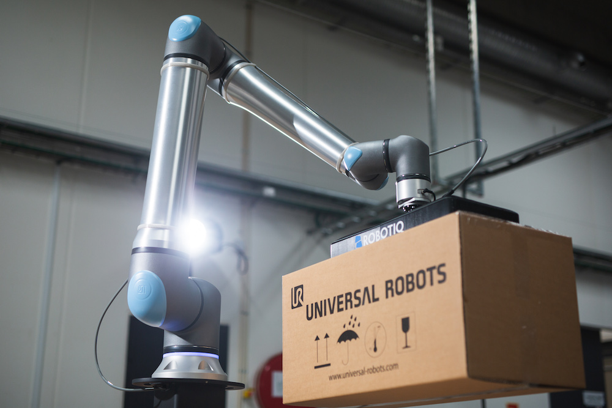

Segment principal
Industria alimentară
Ingrediente pentru panificație și cofetărie, lactate, sosuri, margarină, miere. Aplicație deja implementată, cu rezultate măsurate.

Soluție de paletizare la final de linie
Celula robotică UR20 preia recipientele de pe transportor și le așază pe palet după schema dvs. de paletizare. Într-o implementare din industria alimentară a atins 7,4 recipiente pe minut la 13 kg și 8,6 recipiente pe minut la 5 kg.
Fabrici din România care umplu recipiente cu mâner de 5–15 kg și le paletizează manual, în două sau trei schimburi.
Segment principal
Ingrediente pentru panificație și cofetărie, lactate, sosuri, margarină, miere. Aplicație deja implementată, cu rezultate măsurate.

Extindere
Ambalaje de până la 15 kg, de exemplu 4 L și 8,5 L. Se confirmă prin evaluare tehnică.

Extindere
Produse pe bază de apă, în recipiente cu mâner sub limita de greutate.
Un producător de ingrediente pentru panificație paletiza manual recipiente (găleți) de 5 și 13 kg: doi operatori pe schimb, două-trei schimburi pe zi. Cerința a fost minimum 6 recipiente pe minut.
| Format | Țintă | Măsurat | Pe palet |
|---|---|---|---|
| Recipient 5 kg | 6/min | 8,6/min | 100 |
| Recipient 13 kg | 6/min | 7,4/min | 44 |
Ia recipientul de pe transportor, verifică cu o cameră poziția mânerului și îl așază pe una din cele două poziții de paletizare.
Schimbarea paleților și așezarea separatoarelor. Robotul lucrează pe un post cât operatorul îl pregătește pe celălalt.
Trei scanere urmăresc accesul în zonă. Când cineva se apropie, robotul încetinește sau se oprește.
Valori măsurate într-o singură aplicație. Rezultatele pentru linia dvs. se confirmă prin evaluare tehnică.
Linia existentă umple și închide recipientul.
Banda o aduce în zona robotului.
Sistemul de vedere identifică orientarea mânerului.
Dispozitivul de 5 kg preia recipientul fără să atingă mânerul.
Robotul o așază după schema programată, strat cu strat.
Ritmul liniei e dat de cea mai lentă etapă. De aceea evaluarea tehnică verifică toată linia, nu doar celula.
Răspundeți la trei întrebări simple. Vă spunem dacă un robot de paletizare are sens pentru fabrica dvs. și ce ar trebui verificat.
Întrebarea 1 din 3
Alegeți varianta cea mai apropiată de produsul dvs.
Robotul ridică cel mult 20 kg. Dispozitivul cu care prinde recipientul cântărește 5 kg, deci recipientul poate avea cel mult 15 kg.
Recipientul are mâner?
Adunați toate schimburile. O estimare e suficientă.
În câte schimburi lucrați?
Rezultatul pentru linia dvs.
în capacitatede verificatprea greu
Un inginer confirmă datele liniei și vă spune ce configurație ar funcționa. Răspunsurile dvs. se atașează automat cererii.
Un inginer vă contactează pentru confirmarea datelor liniei.
UR20 ridică cel mult 20 kg, iar dispozitivul de prindere cântărește 5 kg. Rămân 15 kg pentru recipient. Recipiente de 5 și 13 kg au fost deja testate; între 13 și 15 kg e nevoie de o evaluare tehnică.
Pentru produse pe bază de apă, în ambalaje sub limita de greutate, se poate evalua. Ambalajul, materialul și cerințele tehnice se validează separat. Produsele pe bază de solvent nu sunt propuse pentru această configurație.
Da, pentru schimbarea paleților și așezarea separatoarelor. Robotul preia ridicarea repetitivă a recipientelor.
În aplicația de referință, livrarea a durat aproximativ patru luni. Durata pentru linia dvs. reiese din evaluarea tehnică.
Greutatea, forma și stabilitatea recipientului; debitul real al liniei; modelul de paletizare și separatoarele; spațiul și accesul; evaluarea riscurilor și igiena; integrarea cu transportorul.